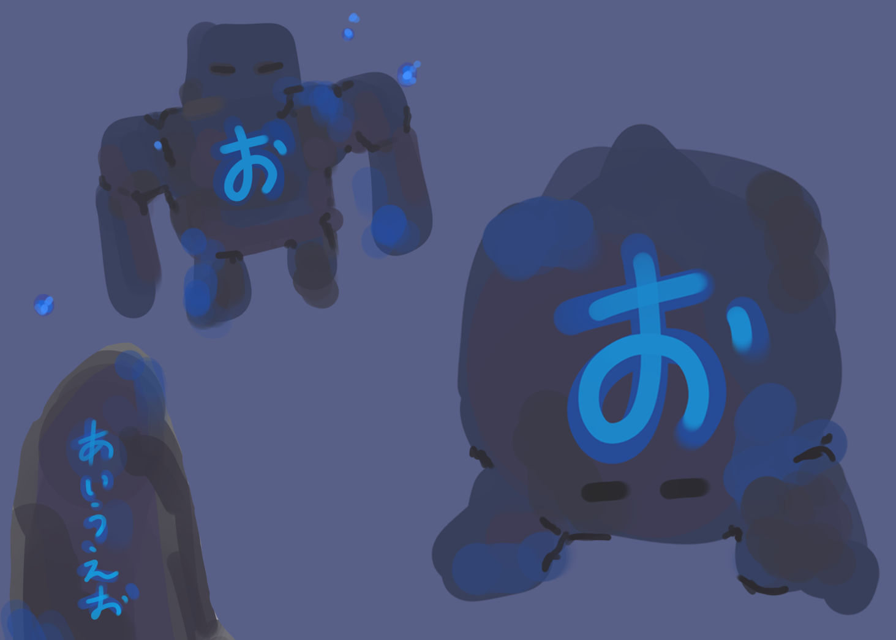
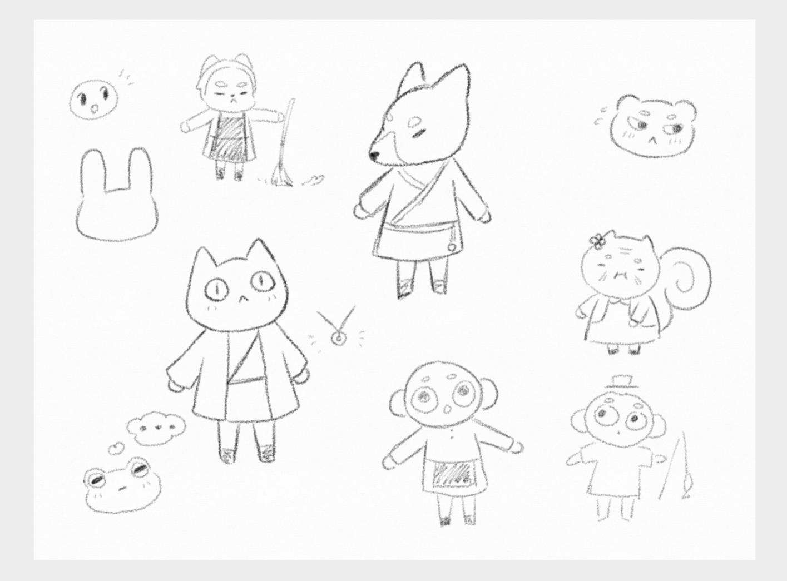
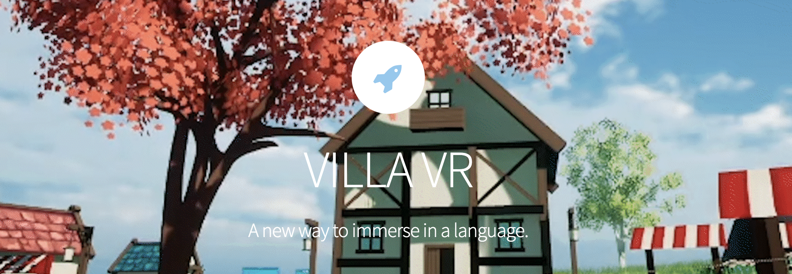

OVERVIEW
Our project VILLA, (Virtual Immersive Language Learning Application) is a virtual reality language learning RPG. VILLA aims to address the challenge of learning a new language in a non-academic setting, where individuals often feel self-conscious about their language skills. To do so, this immersion game transports users to a different world, enabling them to practice a new language in a judgment-free environment while having an enjoyable experience.
MY ROLE
In this project, I played a role in two key areas: Natural Language Processing (NLP) implementation and 3D modeling/environment setup. As the 3D modeler, and character and environment designer for this project, I focused on creating a visually stunning and optimized virtual world within Unreal Engine 5. Some of the specific contributions include:
- NLP Implementation - I integrated a NLP plugin allowing for speech to text implementation for English and Japanese. This allowed for users to actually practice speaking when replying to NPCs in the environment. I then also helped implement fuzzy testing to enhance the NLP system performance to make it more accomodating to variations in pronounciation and and speech patterns. This made the language learning experience more forgiving and accessible.
- Project Manager - Made sure to divide tasks within all team members but also keeping up with writing the weekly checkpoints and checking in on members on task progress.
- 3D Modeling - I designed and created all 3D assets (characters, objetcs, and environment) to make a engaging virtual world.
- Environment Setup - I setup the whole environment layout experimenting with the terrain brush as well as lighting, materials, and shaders(eg, wind, water). I made sure to optimize polygon count, especially for the grass element as thousands of them existed on the terrain.
- Lesson Creation - I helped develop the language lesson content as well as the best strategy of gamifying the learning for users.
Concept art I designed:
 DEVELOPMENT STACK
This project was created in Unreal Engine 5 VR and a NLP Plugin. All assets were made in Blender or Procreate and we used Jira for task management.
DETAILS
This game leverages VR's immersive capabilities to create a safe space for language learning, with players taking on the role of characters in a community setting, where they must navigate social challenges by speaking in the target language while completing quests and interacting with NPCs to gradually improve their language skills. Our system is compatible with all languages but we focused on this experience to be in Japanese.
Our official website includes all pricing and planning to launch this project officially. In addition, we wrote weekly devlogs to keep the public up to date and engaged with our project.
Click here to view the official website!
LESSON CONTENT
We created three quests which equated to three relevant and bite-sized pieces of learning content that players. Throughout the whole experience, all NPCs will speak and have captioning in the target language(Japanese) so users can also practice their listening and reading skills. However, understanding that it would be impossible for them to pick things up from the start, we also added a translation button underneath that would show English text under the original dialogue. To practice reading words, as well as basic alphabet learning, we implemented phonogolems that have the alphabet on their body. If the user is able to read and recite the world/alphabet out loud with correct pronunciation, the phonogolem will disappear into particles. Otherwise, they are unable to get away.
- Quest 1:
- Users get sent on a wild goose chase to find the village head. The user is able to practice basic greetings as well as yes and no questions. 1/5 of the alphabet is introduced in this quest.
- Quest 2:
- User helps out a farmer whose field is being overrun by phonogolems. The user is able to practice more food related vocabulary and alphabet characters.
- Quest 3:
- User help a sick villager that needs medicine. The user is able to practice more requesting related vocabulary and another 1/5 of the alphabet.